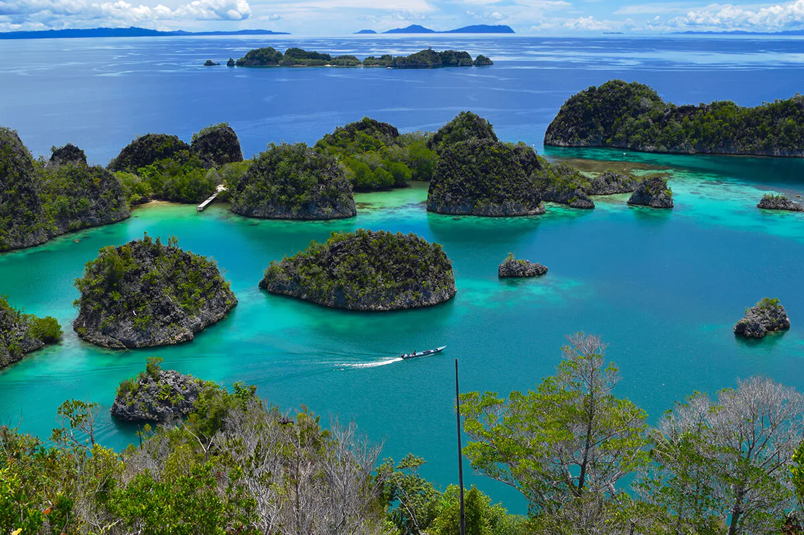

Welcome to Wonderland, Indonesia.
Need some references for your future holiday trip bucket list? We got you! From Aceh in the east end to Merauke in the western end, you will never run out of wonders to discover. Have a look at this expansive list featuring all the amazing things you can find in the 38 provinces of Indonesia. Take note of some of the places that truly catch your attention!
Discover Flores: Indonesia's Hidden Gem
 Flores is the most fascinating and beautiful island. Long hidden in the shadows of its more famous neighbor Bali, the island of Flores is finally emerging as a unique destination of its own. So, after visiting the lair of the Komodo dragons, take time to marvel at some of the wonders of Flores. Here, you can swim in pristine lakes and waterfalls, dive at one of the 50 spectacular dive sites, go kayaking among craggy coasts and mangrove shores, explore mysterious caves and be warmly welcomed by the island’s people in their rituals, dances and daily life.
Flores is the most fascinating and beautiful island. Long hidden in the shadows of its more famous neighbor Bali, the island of Flores is finally emerging as a unique destination of its own. So, after visiting the lair of the Komodo dragons, take time to marvel at some of the wonders of Flores. Here, you can swim in pristine lakes and waterfalls, dive at one of the 50 spectacular dive sites, go kayaking among craggy coasts and mangrove shores, explore mysterious caves and be warmly welcomed by the island’s people in their rituals, dances and daily life.
Flores spells adventure, diving, eco-tours, and mountain climbing interspersed with visits to prehistoric heritage sites, traditional villages and cultural events. Find some of the world’s most exotic underwater life, dive in the pristine seas of Komodo, or swim along with huge manta rays, dolphins and dugongs in the island of Flores!
Raja Ampat Islands: Pieces of Paradise
Far away from city skyscrapers, from dense and hectic concrete jungles, traffic congestions, flickering electric billboards, endless annoying noises, and nuisances of modern cities, the pristine paradise of Raja Amat islands awaits, located on the far eastern side of Indonesia, off the coast of Papua. With spectacular wonders above and beyond its waters, as on land and amidst thick jungles, Raja Ampat is truly the ultimate destination for those seeking serenity, beauty and peace.
Literally meaning ‘The Four Kings’, Raja Ampat covers 9.8 million acres of land and sea, comprising over 1,500 small islands, cays, and shoals surrounding the four main islands of Waigeo, Batanta, Salawati, and Misool. Home to over 540 types of corals, more than 1,000 types of coral fish and around 700 types of mollusks, the overwhelming underwater wonders of raja Ampat will render any diver and snorkeler stunned with amazement.
Meanwhile, the landscape above the surface is equally breathtaking. As if carefully designed and placed with much aesthetic care, the rock islets amidst the clear blue water and bright blue skies above offer a most spectacular scenery one will ever see. Aside from its endless fascinating natural attractions, Raja Ampat also offers the distinct hospitality of the Papuan people with their unique cultural traditions.